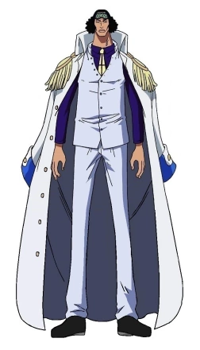
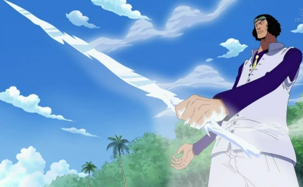
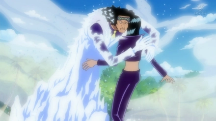
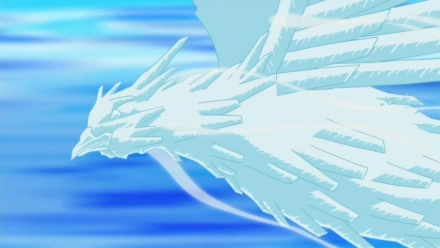

点击人名可依次查看人物介绍
| 赤犬 | 黄猿 | 青雉 | 藤虎 |
|  | 青雉，漫画《航海王》及其衍生作品中的角色。黑胡子航海团10号船船长，曾是“海军本部”最高战力之一的“海军本部大将”，原海军代号“青雉”，与赤犬、黄猿并称为“三大将”。顶上战争结束后不久与赤犬争夺海军元帅之位，与赤犬在庞克哈萨德上激战十天落败后选择辞职 |
||
果实：冰冻果实
招式1：冰刀 冰冻物体，并且从嘴中吐出一口冷气形成一把冰刀 |
 |
招式2：冰冻时刻 将冷气迅速放出速冻对手 |
 |
招式3：冰块“暴雉嘴” 将冷气聚集于右臂，放出一条冰鸟，具有强大的冲击力，所到之处都会冷冻
|
 |